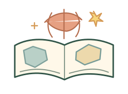

Digitale Covervisualisierung nach dem hochgeladenen PDF. Kein Foto eines fertig hergestellten Buches.
Fachlich freigegebene Publikation
Per E-Mail vorbestellbar
Sprache der Publikation: Ungarisch
Mesék a világ körül – 42 színező

Nach dem Vorlesen darf die Geschichte bunt weitergehen.
42 schwarz-weiße Ausmalseiten im A4-Format zu den 42 Geschichten aus der ungarischen Sammlung Mesék a világ körül.
- 42 Seiten
- A4
- 42 Seiten · Malbuch
Das Original ist auf Ungarisch. Diese deutschsprachige Seite bedeutet nicht, dass eine deutsche Druckausgabe existiert.
Für wen?
Für Kinder, die nach dem Zuhören oder Lesen gerne selbst kreativ werden, zu Hause oder in Gruppen.
Was ist enthalten?
Eine eigene Strichzeichnung pro Geschichte mit ungarischem Titel und Länderangabe.
So funktioniert es
Wählt erst eine Geschichte und danach das zugehörige Bild. Es gibt keine vorgeschriebenen Farben.
Passende Publikation
Der zugehörige Leseband enthält 42 ungarische Geschichten mit Quellenangaben.
Mesék a világ körülVorbestellung per E-Mail
Du kannst deine Vorbestellanfrage schon jetzt per E-Mail senden. Die Nachricht ist noch keine bestätigte Bestellung oder Reservierung. Preis, voraussichtliche Verfügbarkeit und Bedingungen klären wir in der Antwort. Der Webshop wird vorbereitet.
Vorbestellanfrage sendenHier findet keine Online-Zahlung statt. Bitte sende keine Zahlungskartendaten per E-Mail.
Der Inhalt ist fachlich freigegeben. Kommerzielle Nutzungsrechte an zugrunde liegenden Texten und Abbildungen sind eine eigenständige Rechtsfrage; eine E-Mail-Anfrage bestätigt weder Kauf noch Lizenz.
Nach dem Lesen wird ausgemalt
42 Geschichten können zu 42 eigenen Bildern werden
Dieses Ausmalheft ist der Begleiter zu Mesék a világ körül: für den Moment, in dem eine Geschichte endet und die Fantasie weitergeht.
42 einzelne Schwarz-Weiß-Blätter im A4-Format gehören jeweils zu einem Land und einer Erzählung aus dem Lesebuch. Ungarische Titel und die Länderbezeichnung helfen dabei, Geschichte und Bild zu verbinden.
Nach dem Vorlesen können Kinder ihre Szene ausmalen, über Figuren sprechen oder einfach frei Farben wählen. Die vollständigen Erzähltexte sind im separaten Lesebuch enthalten, nicht im Ausmalheft.
Die Zeichnung muss nicht wie die farbige Buchillustration werden. Das fertige Bild soll etwas Eigenes sein. Offene Nutzungsrechtsfragen der dazugehörigen Geschichtensammlung sind gesondert zu behandeln.